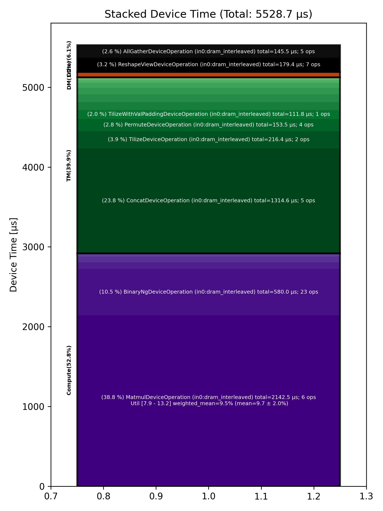

🚀 Performance Report 🚀 ======================== ID Total % Bound OP Code Device Device Time Op-to-Op Gap Cores DRAM DRAM % FLOPs FLOPs % Math Fidelity ----------------------------------------------------------------------------------------------------------------------------------------------------------------------- 25 0.3 % TypecastDeviceOperation 12 59 μs 72 BF16 => FP32 36 1.4 % UnaryDeviceOperation 26 69 μs 194 μs 72 FP32 => FP32 80 0.5 % FillPadDeviceOperation 5 80 μs 14 μs 64 FP32 => FP32 118 0.9 % ReduceDeviceOperation 15 36 μs 125 μs 64 FP32 => FP32 145 1.3 % ReshapeViewDeviceOperation 4 23 μs 229 μs 2 FP32 => FP32 177 1.7 % AllGatherDeviceOperation 0 18 μs 296 μs 8 FP32 => FP32 211 0.5 % FillPadDeviceOperation 21 9 μs 82 μs 4 FP32 => FP32 254 1.2 % TransposeDeviceOperation 11 6 μs 212 μs 72 FP32 => FP32 281 1.3 % ReduceDeviceOperation 12 5 μs 235 μs 64 FP32 => FP32 313 0.5 % TransposeDeviceOperation 12 3 μs 95 μs 72 FP32 => FP32 327 1.0 % BinaryNgDeviceOperation 2 9 μs 186 μs 72 FP32, FP32 => FP32 368 1.4 % BinaryNgDeviceOperation 5 9 μs 253 μs 72 FP32, FP32 => FP32 405 1.2 % UnaryDeviceOperation 23 3 μs 219 μs 2 FP32 => FP32 429 0.7 % ReshapeViewDeviceOperation 31 38 μs 96 μs 46 FP32 => FP32 464 0.8 % BinaryNgDeviceOperation 5 14 μs 139 μs 72 FP32, FP32 => FP32 502 1.5 % BinaryNgDeviceOperation 15 18 μs 264 μs 72 FP32, FP32 => FP32 543 1.3 % TypecastDeviceOperation 10 3 μs 241 μs 46 FP32 => BF16 562 2.8 % SLOW MatmulDeviceOperation 64 x 736 x 512 15 29 μs 504 μs 16 18 GB/s 6.3 % 1.6 TFLOPs 10.0 % HiFi4 BF16 x BFP8 => BF16 593 3.2 % ReduceScatterDeviceOperation 0 49 μs 558 μs 24 BF16 => BF16 625 2.0 % AllGatherDeviceOperation 0 31 μs 353 μs 24 BF16 => BF16 673 0.6 % BinaryNgDeviceOperation 8 3 μs 118 μs 72 BF16, BF16 => BF16 682 1.2 % ReshapeViewDeviceOperation 28 32 μs 201 μs 72 BF16 => BF16 734 1.3 % SliceDeviceOperation 11 16 μs 227 μs 72 BF16 => BF16 769 1.7 % BinaryNgDeviceOperation 8 53 μs 260 μs 72 BF16, BF16 => BF16 792 1.2 % SliceDeviceOperation 13 15 μs 207 μs 72 BF16 => BF16 830 0.8 % BinaryNgDeviceOperation 11 56 μs 99 μs 72 BF16, BF16 => BF16 861 0.7 % BinaryNgDeviceOperation 19 16 μs 114 μs 72 BF16, BF16 => BF16 887 1.6 % BinaryNgDeviceOperation 14 53 μs 257 μs 72 BF16, BF16 => BF16 905 1.4 % BinaryNgDeviceOperation 0 56 μs 205 μs 72 BF16, BF16 => BF16 932 1.2 % BinaryNgDeviceOperation 26 16 μs 210 μs 72 BF16, BF16 => BF16 986 1.4 % ConcatDeviceOperation 16 25 μs 241 μs 72 BF16, BF16 => BF16 1010 2.9 % SLOW MatmulDeviceOperation 64 x 736 x 64 15 18 μs 531 μs 4 8 GB/s 2.9 % 0.3 TFLOPs 8.2 % HiFi4 BF16 x BFP8 => BF16 1041 1.6 % AllGatherDeviceOperation 0 17 μs 288 μs 8 BF16 => BF16 1058 0.5 % FastReduceNCDeviceOperation 24 2 μs 100 μs 4 BF16 => BF16 1111 1.6 % BinaryNgDeviceOperation 14 3 μs 303 μs 72 BF16, BF16 => BF16 1126 1.4 % ReshapeViewDeviceOperation 3 8 μs 265 μs 72 BF16 => BF16 1178 1.4 % PermuteDeviceOperation 16 12 μs 246 μs 72 BF16 => BF16 1212 0.5 % SliceDeviceOperation 18 3 μs 91 μs 64 BF16 => BF16 1229 1.0 % BinaryNgDeviceOperation 31 9 μs 172 μs 72 BF16, BF16 => BF16 1262 1.3 % SliceDeviceOperation 7 3 μs 244 μs 64 BF16 => BF16 1288 0.6 % BinaryNgDeviceOperation 1 9 μs 108 μs 72 BF16, BF16 => BF16 1326 0.8 % BinaryNgDeviceOperation 7 4 μs 144 μs 72 BF16, BF16 => BF16 1372 1.4 % BinaryNgDeviceOperation 18 9 μs 258 μs 72 BF16, BF16 => BF16 1390 1.4 % BinaryNgDeviceOperation 7 9 μs 254 μs 72 BF16, BF16 => BF16 1438 1.3 % BinaryNgDeviceOperation 11 4 μs 246 μs 72 BF16, BF16 => BF16 1468 0.5 % ConcatDeviceOperation 18 4 μs 97 μs 72 BF16, BF16 => BF16 1479 1.0 % InterleavedToShardedDeviceOperation 2 2 μs 196 μs 64 BF16 => BF16 1514 1.2 % PagedUpdateCacheDeviceOperation 28 7 μs 213 μs 64 BF16, BF16 => BF16 1550 0.7 % UntilizeDeviceOperation 7 18 μs 106 μs 64 BF16 => BF16 1579 3.0 % ConcatDeviceOperation 29 429 μs 141 μs 72 BF16, BF16 => BF16 1633 0.6 % TilizeDeviceOperation 8 109 μs 1 μs 71 BF16 => BF16 1657 0.5 % TransposeDeviceOperation 12 91 μs 1 μs 72 BF16 => BF16 1673 5.4 % SLOW MatmulDeviceOperation 32 x 64 x 128 30 832 μs 193 μs 4 18 GB/s 6.1 % 0.3 TFLOPs 7.9 % HiFi4 BF16 x BF16 => BF16 1717 0.5 % BinaryNgDeviceOperation 23 85 μs 1 μs 72 BF16, BF16 => BF16 1733 0.5 % BinaryNgDeviceOperation 27 89 μs 1 μs 72 BF16, BF16 => BF16 1778 0.1 % UntilizeWithUnpaddingDeviceOperation 20 26 μs 1 μs 64 BF16 => BF16 1820 0.1 % UntilizeWithUnpaddingDeviceOperation 18 9 μs 1 μs 64 BF16 => BF16 1831 0.4 % PermuteDeviceOperation 2 70 μs 1 μs 72 BF16 => BF16 1883 2.3 % ConcatDeviceOperation 17 426 μs 10 μs 72 BF16, BF16 => BF16 1893 0.3 % PermuteDeviceOperation 27 61 μs 1 μs 72 BF16 => BF16 1927 0.6 % TilizeWithValPaddingDeviceOperation 2 112 μs 1 μs 64 BF16 => BF16 1964 0.4 % SoftmaxDeviceOperation 30 84 μs 1 μs 72 BF16 => BF16 2006 0.4 % SliceDeviceOperation 15 45 μs 26 μs 72 BF16 => BF16 2027 2.3 % SLOW MatmulDeviceOperation 64 x 736 x 64 18 18 μs 417 μs 4 9 GB/s 3.0 % 0.3 TFLOPs 8.4 % HiFi4 BF16 x BFP8 => BF16 2065 1.4 % AllGatherDeviceOperation 0 16 μs 243 μs 8 BF16 => BF16 2111 0.6 % FastReduceNCDeviceOperation 10 2 μs 114 μs 4 BF16 => BF16 2141 1.1 % BinaryNgDeviceOperation 19 3 μs 212 μs 72 BF16, BF16 => BF16 2158 1.4 % ReshapeViewDeviceOperation 7 8 μs 248 μs 72 BF16 => BF16 2186 1.4 % PermuteDeviceOperation 28 11 μs 246 μs 72 BF16 => BF16 2213 0.6 % InterleavedToShardedDeviceOperation 27 2 μs 105 μs 64 BF16 => BF16 2242 0.7 % PagedUpdateCacheDeviceOperation 24 7 μs 124 μs 64 BF16, BF16 => BF16 2278 0.6 % UntilizeDeviceOperation 3 17 μs 97 μs 64 BF16 => BF16 2315 3.2 % ConcatDeviceOperation 29 431 μs 166 μs 72 BF16, BF16 => BF16 2338 0.6 % TilizeDeviceOperation 24 107 μs 1 μs 71 BF16 => BF16 2377 6.7 % SLOW MatmulDeviceOperation 32 x 128 x 64 30 1,231 μs 38 μs 2 12 GB/s 4.1 % 0.2 TFLOPs 10.6 % HiFi4 BF16 x BF16 => BF16 2426 0.1 % ReshapeViewDeviceOperation 16 26 μs 1 μs 32 BF16 => BF16 2465 0.1 % SLOW MatmulDeviceOperation 64 x 512 x 736 11 15 μs 1 μs 23 35 GB/s 12.1 % 3.1 TFLOPs 13.2 % HiFi4 BF16 x BFP8 => BF16 2481 0.3 % AllGatherDeviceOperation 0 63 μs 1 μs 24 BF16 => BF16 2498 0.0 % FillPadDeviceOperation 24 6 μs 1 μs 8 BF16 => BF16 2558 0.0 % FastReduceNCDeviceOperation 11 7 μs 1 μs 46 BF16 => BF16 2589 0.0 % SliceDeviceOperation 19 3 μs 1 μs 46 BF16 => BF16 2603 1.0 % BinaryNgDeviceOperation 29 4 μs 190 μs 72 BF16, BF16 => BF16 2648 1.5 % ReshapeViewDeviceOperation 13 44 μs 247 μs 72 BF16 => BF16 2684 1.5 % BinaryNgDeviceOperation 18 50 μs 240 μs 72 BF16, BF16 => BF16 ----------------------------------------------------------------------------------------------------------------------------------------------------------------------- 100.0 % 84 device ops, 0 host ops, 0 signposts 5,529 μs 13,365 μs 📊 Stacked report 📊 ==================== Total % Op Code Device Time Sum Op Count Op Category Min FLOPs Max FLOPs Mean FLOPs Std FLOPs Weighted Mean FLOPs ------------------------------------------------------------------------------------------------------------------------------------------------------------------------------ 38.75 % MatmulDeviceOperation (in0:dram_interleaved) 2,142.48 μs 6 Compute 7.85 % 13.23 % 9.71 % 2.03 % 9.51 % 23.78 % ConcatDeviceOperation (in0:dram_interleaved) 1,314.63 μs 5 TM 10.49 % BinaryNgDeviceOperation (in0:dram_interleaved) 579.99 μs 23 Compute 3.91 % TilizeDeviceOperation (in0:dram_interleaved) 216.44 μs 2 TM 3.25 % ReshapeViewDeviceOperation (in0:dram_interleaved) 179.44 μs 7 Other 2.78 % PermuteDeviceOperation (in0:dram_interleaved) 153.55 μs 4 TM 2.63 % AllGatherDeviceOperation (in0:dram_interleaved) 145.54 μs 5 Other 2.02 % TilizeWithValPaddingDeviceOperation (in0:dram_interleaved) 111.83 μs 1 TM 1.79 % TransposeDeviceOperation (in0:dram_interleaved) 99.22 μs 3 TM 1.72 % FillPadDeviceOperation (in0:dram_interleaved) 95.09 μs 3 TM 1.52 % SoftmaxDeviceOperation (in0:dram_interleaved) 84.08 μs 1 Compute 1.51 % SliceDeviceOperation (in0:dram_interleaved) 83.65 μs 6 TM 1.29 % UnaryDeviceOperation (in0:dram_interleaved) 71.55 μs 2 Compute 1.12 % TypecastDeviceOperation (in0:dram_interleaved) 61.76 μs 2 TM 0.89 % ReduceScatterDeviceOperation (in0:dram_interleaved) 49.26 μs 1 DM 0.73 % ReduceDeviceOperation (in0:dram_interleaved) 40.47 μs 2 Compute 0.64 % UntilizeWithUnpaddingDeviceOperation (in0:dram_interleaved) 35.37 μs 2 TM 0.64 % UntilizeDeviceOperation (in0:dram_interleaved) 35.16 μs 2 TM 0.25 % PagedUpdateCacheDeviceOperation (in0:dram_interleaved) 13.59 μs 2 DM 0.21 % FastReduceNCDeviceOperation (in0:dram_interleaved) 11.63 μs 3 Other 0.07 % InterleavedToShardedDeviceOperation (in0:dram_interleaved) 4.05 μs 2 DM ------------------------------------------------------------------------------------------------------------------------------------------------------------------------------
